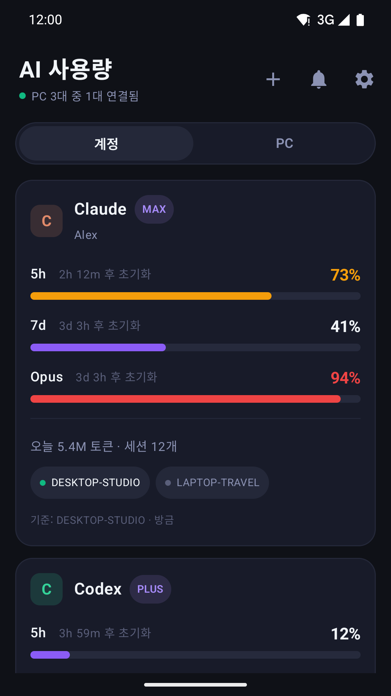
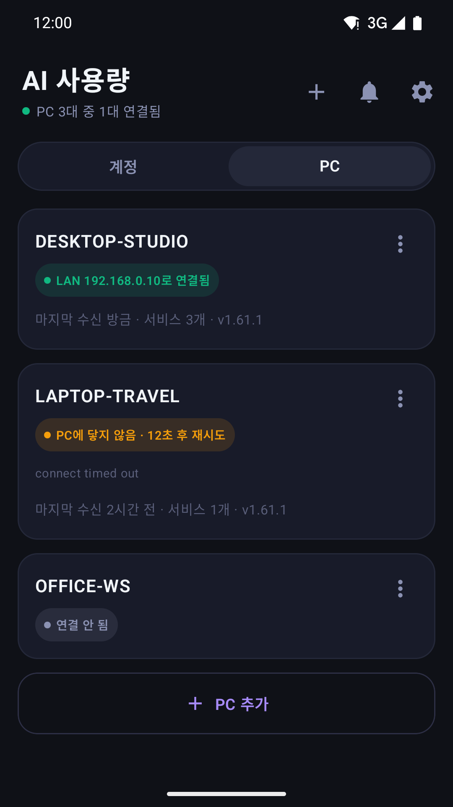
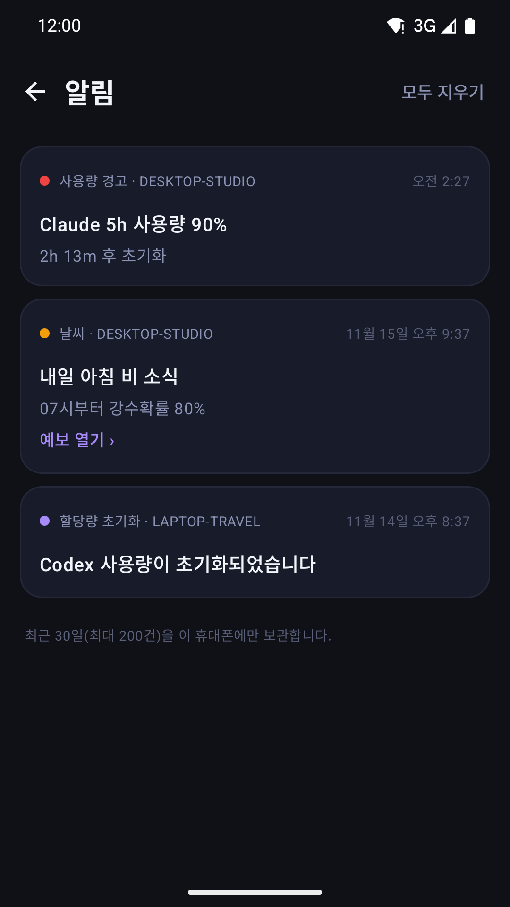

C
Claude
Pro · Max · Team
5시간52%
7일41%
5시간·7일 한도와 모델별 한도, 오늘 쓴 토큰(입력·출력·캐시)과 비용 참고치, 7일·24시간 추이까지.
Claude · Codex · Antigravity · OpenCode의 사용량과 초기화 시각, 소진 속도를 Windows 작업 표시줄 트레이 하나에 모았습니다. 자리를 비워도 휴대폰으로 알림이 옵니다.
지원 도구
Claude·Codex·Antigravity는 각 도구에 이미 로그인해 둔 정보를 그대로 읽습니다. API 키를 따로 넣을 필요가 없습니다.
Pro · Max · Team
5시간·7일 한도와 모델별 한도, 오늘 쓴 토큰(입력·출력·캐시)과 비용 참고치, 7일·24시간 추이까지.
ChatGPT Plus · Pro
ChatGPT 요금제의 단기·장기 한도와 모델별 추가 한도, ChatGPT 이미지 생성 남은 횟수.
Google 계정
Antigravity 앱의 Models & Usage와 같은 주간·5시간 한도, 모델 한정 한도, Google AI 크레딧 잔액.
Go · Go Plus
Go 요금제의 롤링·주간·월간 사용률과 한도 도달·재개 시각, 로컬 DB로 센 오늘의 토큰.
쓰지 않는 도구는 설정에서 끄면 팝업에서 사라집니다.
페이스
같은 60%라도 창이 막 열렸다면 위험하고, 곧 초기화된다면 넉넉합니다. 그래서 모든 게이지에는 창이 흐른 만큼을 가리키는 흰 선이 있습니다.
알림
PC 여러 대가 같은 사건을 알려도 휴대폰에는 한 번만 뜹니다.



Android 앱 · AI 사용량
QR 한 번이면 PC와 휴대폰이 연결됩니다. 집 PC와 회사 PC가 같은 계정이면 한 카드로 묶어 보여 주고, 다른 계정은 절대 섞지 않습니다.
Google Play 출시를 준비하고 있습니다. iPhone 앱은 없지만 ntfy 앱으로 알림은 받을 수 있습니다.
개인정보
휴대폰은 내가 QR로 연결한 PC에 직접 붙습니다. 개발자가 운영하는 서버도, 가입도, 수집도 없습니다.
그리고
작업 표시줄의 16px 아이콘이 사용량만큼 차오릅니다. 60%에서 주황, 85%에서 빨강. 팝업을 열지 않아도 압니다.
입력·출력·캐시 읽기·캐시 쓰기를 색으로 나누고, 달러 비용 참고치로 환산합니다.
어느 날, 어느 시간에 많이 썼는지 한눈에.
개인 Max와 회사 Team을 오가도 헷갈리지 않게, 요금제 옆에 계정 이름을 표시합니다.
새 버전을 받으면 SHA-256을 확인한 뒤 교체하고 다시 시작합니다.
작게 띄워 두고, 끌면 화면 가장자리에 착 붙습니다.
시스템 언어를 따르고, 설정에서 바로 바꿉니다.
초기화가 10분 안으로 다가오면 9m 59s처럼 초까지 셉니다. 배경에서 1–10분마다 새로 고칩니다.
설치
SmartScreen 경고가 뜨면 추가 정보 → 실행. 앱이 반응하지 않으면 .NET 9 Desktop Runtime을 먼저 설치하세요.
작업 표시줄 오른쪽의 게이지 아이콘을 누르면 팝업이 열립니다. Windows 시작 시 자동 실행도 켤 수 있습니다.
# .NET 9 SDK
git clone https://github.com/jeiel85/claude-usage-tray-windows
cd claude-usage-tray-windows
dotnet run --project ClaudeUsageTrayFAQ
아니요. Anthropic, OpenAI, Google과 관련 없는 개인 오픈 소스 프로젝트입니다. 각 도구가 공개하거나 앱에서 쓰는 사용량 정보를 읽어 보여 줍니다.
앱은 각 도구가 PC에 저장해 둔 로그인 정보를 읽어 그 서비스의 사용량 조회에만 씁니다. 개발자 서버로 보내지 않고, 휴대폰에도 토큰이나 계정 ID를 보내지 않습니다. 코드는 모두 공개돼 있습니다.
코드 서명 인증서가 없는 개인 프로젝트라 SmartScreen이 경고합니다. 추가 정보 → 실행을 누르면 됩니다. 릴리스마다 SHA256.txt가 함께 올라가니 파일을 직접 확인할 수도 있습니다.
네. 설정 → 연결에서 한 PC의 동기화 코드를 다른 PC에 붙여 넣거나, OneDrive 같은 공유 폴더를 지정하면 같은 계정의 사용량이 합쳐집니다. Claude Code가 없는 PC에서도 그룹의 사용량을 볼 수 있습니다.
네. Tailscale을 쓰거나, 설정 → 연결에서 Cloudflare Tunnel을 켜면 됩니다. 포트 개방이나 방화벽 설정이 필요 없습니다.
휴대폰 앱은 지금 Android만 있습니다. iPhone에서는 ntfy 앱으로 토픽을 구독하면 같은 알림을 받을 수 있습니다(설정 → 알림 → ntfy).